Question: which pathways or gene programs are enriched among the genes that change, in one comparison or across many?
| Function | Shows | Input |
|---|---|---|
standardize_enrichment() |
one table from any tool (used by every plot below) | fgsea, clusterProfiler, GSEA desktop |
plot_enrichment_dots() |
the top gene sets of one or a few results | ORA or GSEA |
plot_enrichment_bars() |
NES of the top up and down gene sets of one comparison | GSEA |
plot_enrichment_grid() |
gene sets × comparisons | ORA or GSEA |
plot_gsea_rank() |
the running enrichment score of one gene set | GSEA with the ranked list |
format_gene_sets() |
gene sets as a list, GMT or GeneSetCollection |
The two kinds of analysis answer different questions. Over-representation (ORA) tests whether a gene list (e.g. up-regulated genes) contains more genes of a set than expected; the result depends on the cutoffs that made the list. GSEA ranks all genes (e.g. by signed significance) and tests whether a set’s genes gather at the top or bottom of the ranking; its normalized enrichment score (NES) is signed.
Data: MSigDB Hallmark gene sets (msigdbr, human). GSEA: interferon-β (IFN-β) vs control per cell type in the PBMCs of Kang et al. 2018 (pseudobulk edgeR, see DE: many comparisons). ORA: genes up- and down-regulated by IFN-γ in the macrophages of Alasoo et al. 2018.
Gene sets
# msigdbr::msigdbr(species = "Homo sapiens", collection = "H"), cached
hallmark <- docs_hallmark()
hallmark_list <- split(hallmark$gene_symbol, hallmark$gs_name)
length(hallmark_list)
#> [1] 50format_gene_sets() converts between a named list (the
input of fgsea and Seurat::AddModuleScore()), a GMT file
and a GSEABase GeneSetCollection:
gmt_file <- tempfile(fileext = ".gmt")
# Write a GMT file, then read it back as a list
format_gene_sets(hallmark_list, to = "gmt", file = gmt_file)
substr(readLines(gmt_file, n = 2), 1, 70)
#> [1] "HALLMARK_ADIPOGENESIS\t\tABCA1\tABCB8\tACAA2\tACADL\tACADM\tACADS\tACLY\tACO2\tA"
#> [2] "HALLMARK_ALLOGRAFT_REJECTION\t\tAARS1\tABCE1\tABI1\tACHE\tACVR2A\tAKT1\tAPBB1\t"
sets <- format_gene_sets(gmt_file, to = "list")
identical(sets, lapply(hallmark_list, unique))
#> [1] TRUERunning the analyses
GSEA with fgsea, per cell type. The ranking metric is the signed −log10 p-value of each gene (adjusted p-values have many ties):
de <- docs_kang_de()
signed_p <- function(t) {
stats <- -log10(t$PValue) * sign(t$logFC)
sort(setNames(stats, rownames(t)), decreasing = TRUE)
}
ranks <- lapply(de, signed_p)
set.seed(1)
# eps = 0: estimate very small p-values exactly (fgsea's recommendation)
gsea <- lapply(ranks, function(r) {
fgsea::fgsea(hallmark_list, r, minSize = 15, maxSize = 500, eps = 0)
})ORA with clusterProfiler, for the genes up- and down-regulated by IFN-γ in macrophages (edgeR, paired by donor), against all tested genes as the universe:
mac <- docs_macrophage()
keep <- mac$samples$condition %in% c("naive", "IFNg")
samples <- droplevels(mac$samples[keep, ])
counts <- filter_low_expression_genes(mac$counts[, keep], 6)
y <- edgeR::normLibSizes(edgeR::DGEList(counts))
design <- model.matrix(~ donor + condition, data = samples)
fit <- edgeR::glmQLFit(y, design)
test <- edgeR::glmQLFTest(fit, coef = "conditionIFNg")
de_ifng <- as.data.frame(edgeR::topTags(test, n = Inf))
lists <- filter_de_genes(de_ifng, logfc.cutoff = 1)
term2gene <- hallmark[c("gs_name", "gene_symbol")]
ora <- lapply(lists, function(d) {
clusterProfiler::enricher(
rownames(d),
TERM2GENE = term2gene,
universe = rownames(de_ifng)
)
})
names(ora) <- c("Up in IFN-γ", "Down in IFN-γ")Reading results
Every plot reads its input with
standardize_enrichment(), which recognises fgsea,
clusterProfiler (GSEA and ORA) and GSEA desktop tables, and makes MSigDB
names readable (clean.terms:
“HALLMARK_INTERFERON_ALPHA_RESPONSE” becomes “Interferon alpha
response”; the original is kept in term_id):
std <- standardize_enrichment(gsea)
top_rows <- std[order(std$padj), c("term", "comparison", "nes", "padj", "size")]
head(top_rows, 4)
#> term comparison nes padj size
#> 148 Interferon gamma response CD14 Mono 2.959178 1.240949e-37 140
#> 23 Interferon alpha response CD4 T 2.322855 8.082227e-33 72
#> 24 Interferon gamma response CD4 T 2.294325 8.082227e-33 120
#> 147 Interferon alpha response CD14 Mono 2.961099 2.563371e-30 77A named list gives one comparison per element; a clusterProfiler result object can be passed as it is.
Top gene sets: dot plot
The most significant gene sets of a result. For ORA, the x-axis is the gene ratio (genes of the set in the list / genes in the list), the size the number of genes and the colour the −log10 adjusted p-value. One result is one panel, with its colour bar and size legend side by side:
plot_enrichment_dots(ora[["Up in IFN-γ"]], n = 8)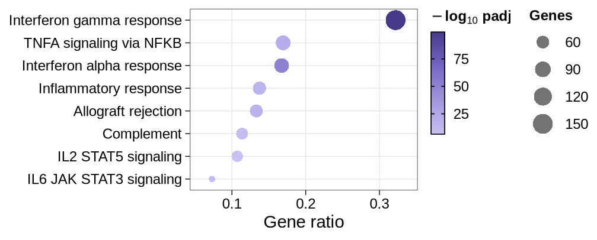
A GSEA result alone, on the NES (sizes: leading-edge genes):
plot_enrichment_dots(gsea[["CD14 Mono"]], x = "nes", n = 8)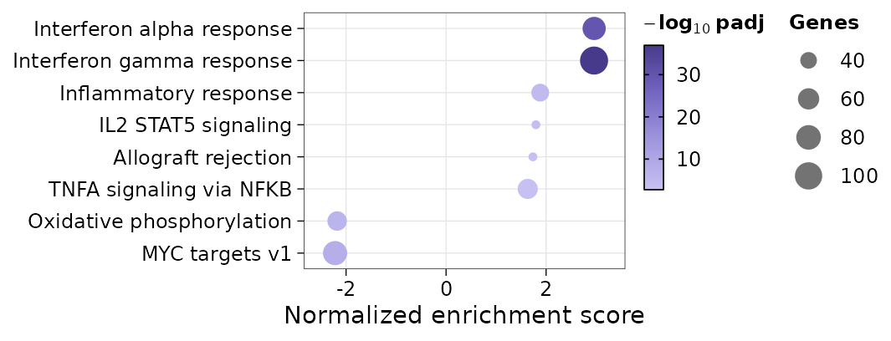
A named list gives one panel per result, each in its own palette. All strips have the same thickness, their names centred, and the legends sit in two columns: the colour bars of the panels (top panel first), then the size legend (one, since the panels share their limits):
plot_enrichment_dots(ora, n = 8)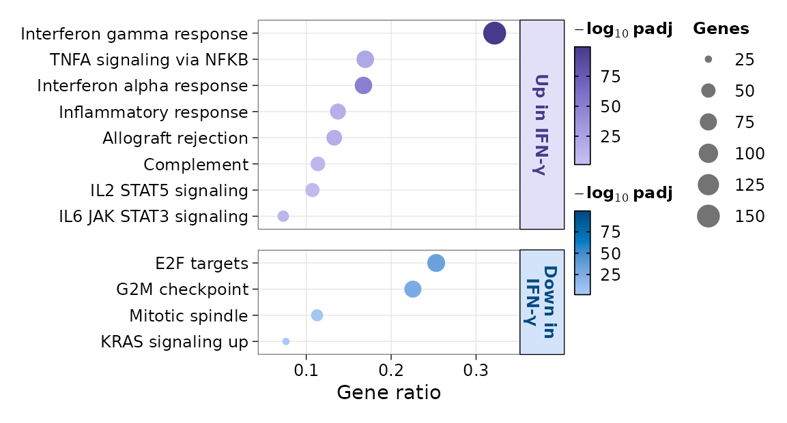
Variants
GSEA results on the NES; several cell types side by side
(nrow = 1):
plot_enrichment_dots(
gsea[c("CD14 Mono", "B")],
x = "nes",
n = 6,
nrow = 1
)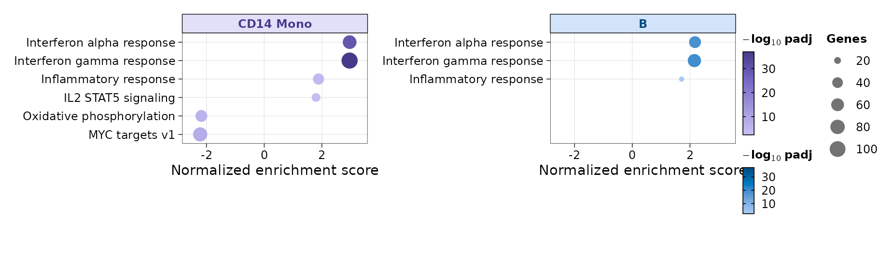
Ordered by significance, with shortened names:
plot_enrichment_dots(
ora,
n = 6,
order.by = "padj",
term.replace = c("Interferon" = "IFN", " response" = "")
)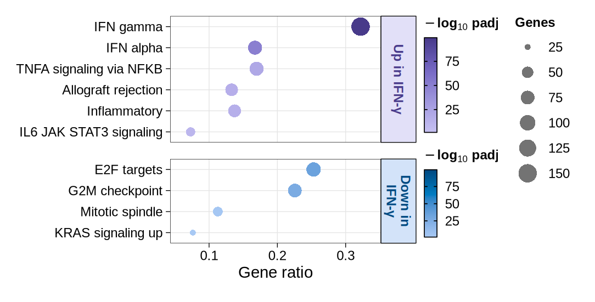
All legends in one column, each panel’s colour bar and size legend in turn:
plot_enrichment_dots(ora, n = 6, legend.layout = "stacked")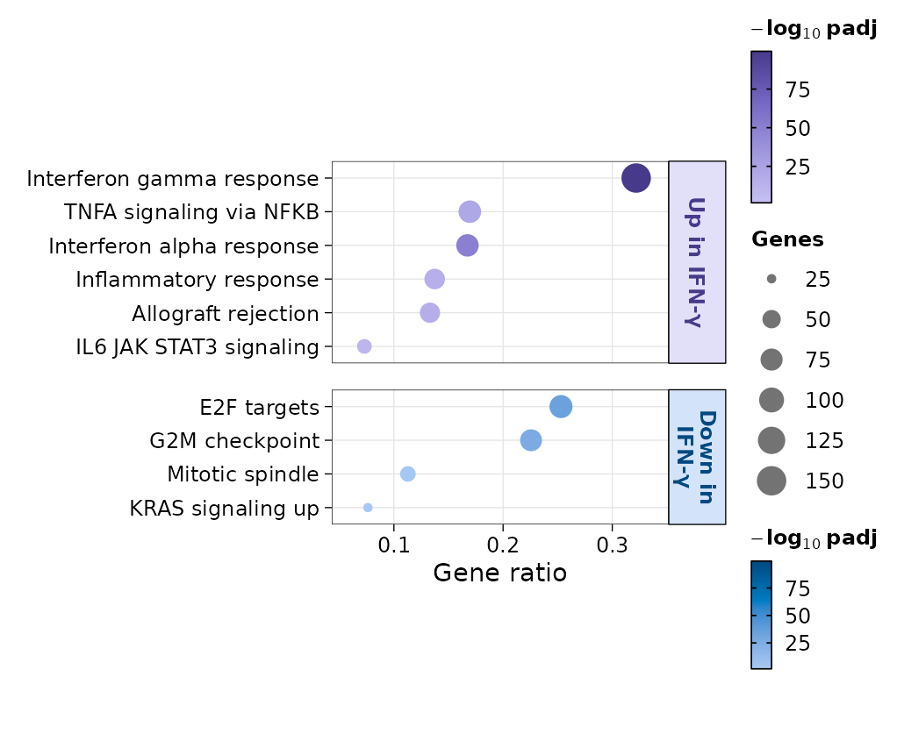
One comparison: NES bars
The top gene sets with positive and negative NES of one comparison; names sit on the opposite side of 0 from their bars:
plot_enrichment_bars(gsea, comparison = "CD14 Mono", n.up = 6, n.down = 6)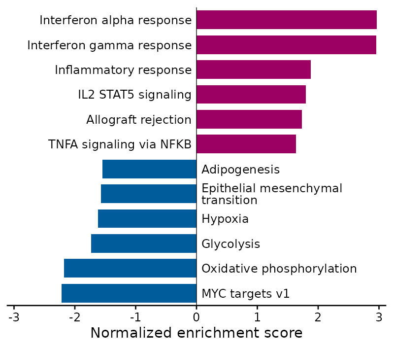
Variants
plot_enrichment_bars(
gsea,
comparison = "CD14 Mono",
n.up = 6,
n.down = 6,
fill = "padj"
)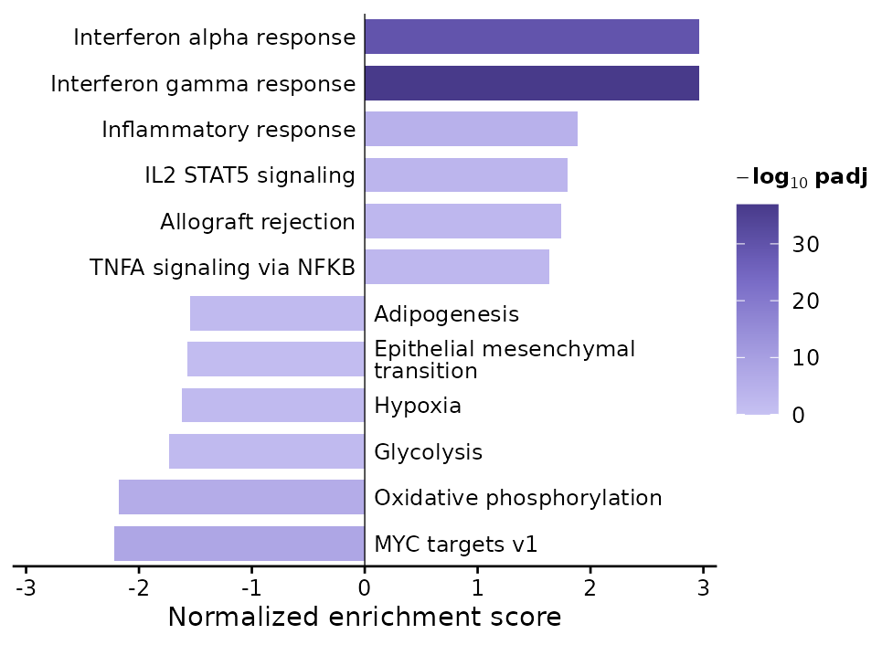
Non-significant gene sets fill the bars when there are fewer significant ones, faded:
plot_enrichment_bars(
gsea,
comparison = "B",
n.up = 5,
n.down = 5,
show.ns = TRUE
)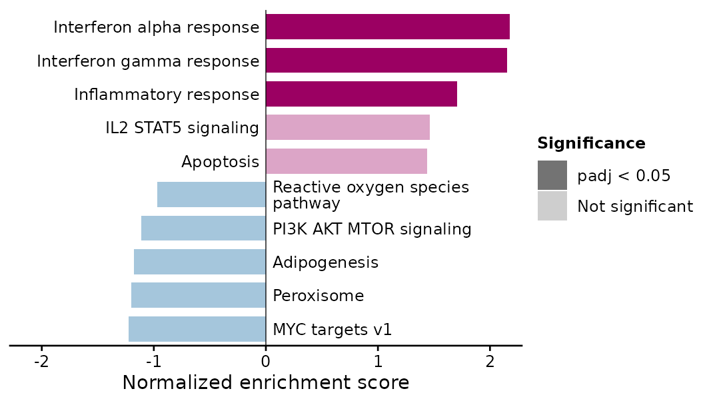
Many comparisons: grid
Gene sets × comparisons: colour is the NES (centred on 0, each side
to its own extreme), size the −log10 adjusted p-value, non-significant
results faded; by default the top n sets of each
comparison, clustered:
plot_enrichment_grid(gsea, n = 4)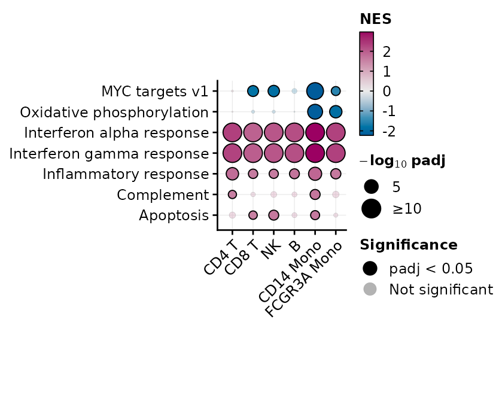
Variants
Chosen gene sets, in groups of rows marked by bars:
chosen <- list(
Interferon = c("Interferon alpha response", "Interferon gamma response"),
Inflammation = c("Inflammatory response", "TNFA signaling via NFKB", "IL6 JAK STAT3 signaling"),
Proliferation = c("E2F targets", "G2M checkpoint", "MYC targets v1")
)
plot_enrichment_grid(gsea, terms = chosen)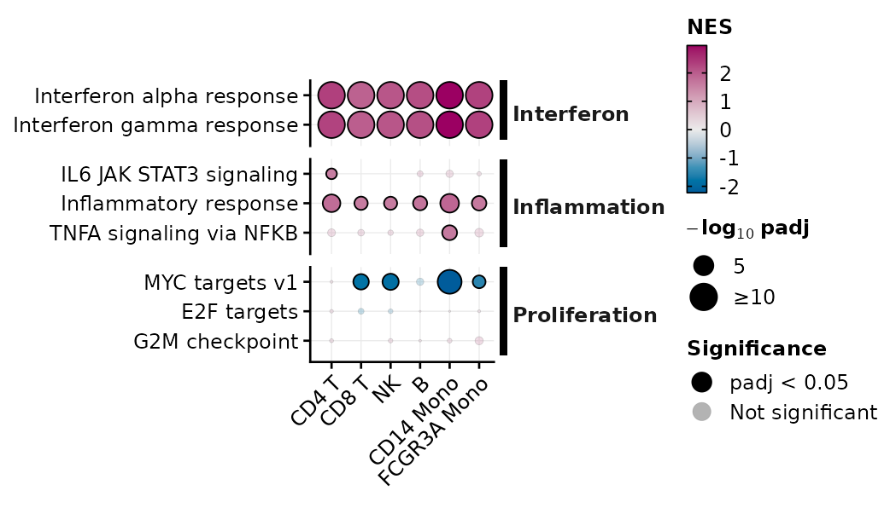
Over-representation results are coloured by significance and sized by the number of genes:
plot_enrichment_grid(ora, n = 6)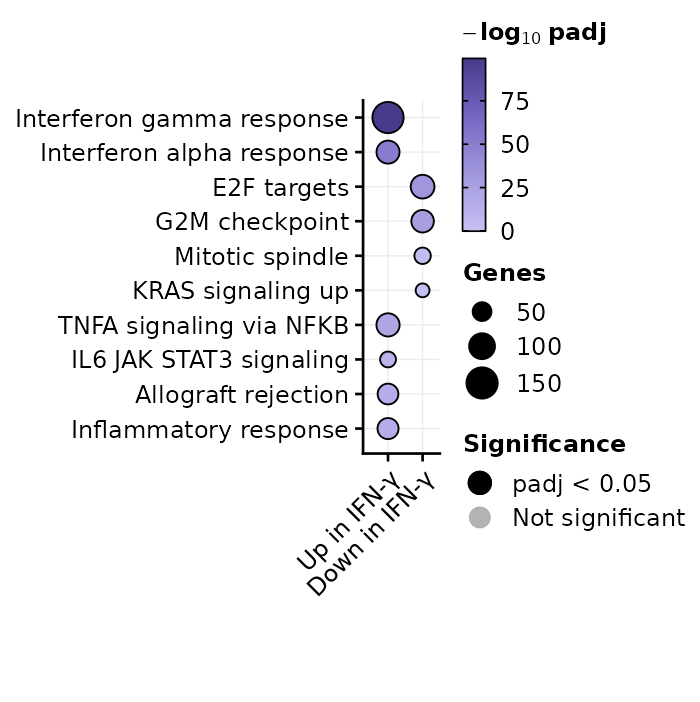
plot_enrichment_grid(gsea, n = 3, significance = "hide", flip = TRUE)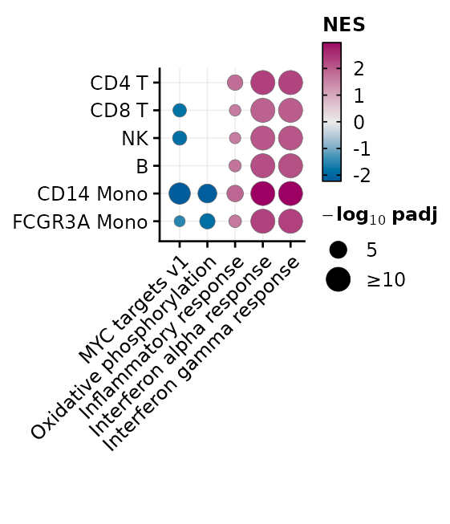
One gene set: running score
plot_gsea_rank() draws the running enrichment score of a
gene set along the ranked list, the positions of its genes, and the
ranking metric. From fgsea results, give the ranked list
(stats) and the gene sets. The first five genes of the
leading edge (the set’s genes before the peak of the score) are named,
with an arrow to their ticks:
plot_gsea_rank(
gsea,
"HALLMARK_INTERFERON_ALPHA_RESPONSE",
comparison = "CD14 Mono",
stats = ranks[["CD14 Mono"]],
gene.sets = hallmark_list,
metric.title = "Signed\n-log10 p"
)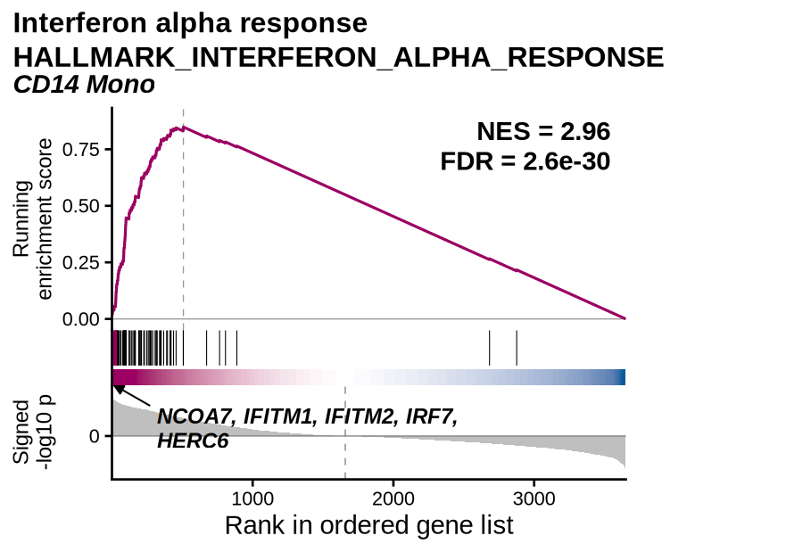
The band under the gene positions is the ranking metric along the
list, as in the GSEA desktop plot: magenta where genes rank up (metric
above 0), white around 0, blue where they rank down. It is the same for
every gene set of a comparison and shows where the list turns from up-
to down-ranked genes (the dashed line in the metric panel). It is not
the band of enrichplot::gseaplot2(), which colours eight
stretches of the list holding equal shares of the set’s genes and
encodes no value at the rank where it is drawn.
Variants
The gene set with the most significant negative NES in CD14 monocytes; its leading edge is at the end of the list, named from the most down-ranked gene:
mono <- gsea[["CD14 Mono"]]
negative_set <- mono$pathway[which.min(ifelse(mono$NES < 0, mono$padj, Inf))]
plot_gsea_rank(
gsea,
negative_set,
comparison = "CD14 Mono",
stats = ranks[["CD14 Mono"]],
gene.sets = hallmark_list,
metric.title = "Signed\n-log10 p"
)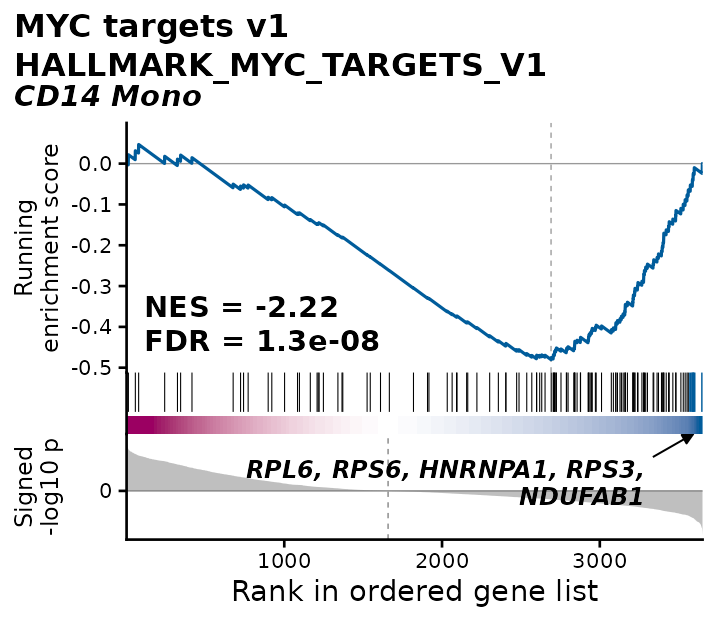
label = "selected" names the genes given
(label.features); "none" names none.
band = "none" leaves the band out:
plot_gsea_rank(
gsea,
"HALLMARK_INTERFERON_ALPHA_RESPONSE",
comparison = "CD14 Mono",
stats = ranks[["CD14 Mono"]],
gene.sets = hallmark_list,
label = "selected",
label.features = c("ISG15", "IFIT1", "MX1"),
band = "none"
)
#> Warning: `label.features` not in the gene set: IFIT1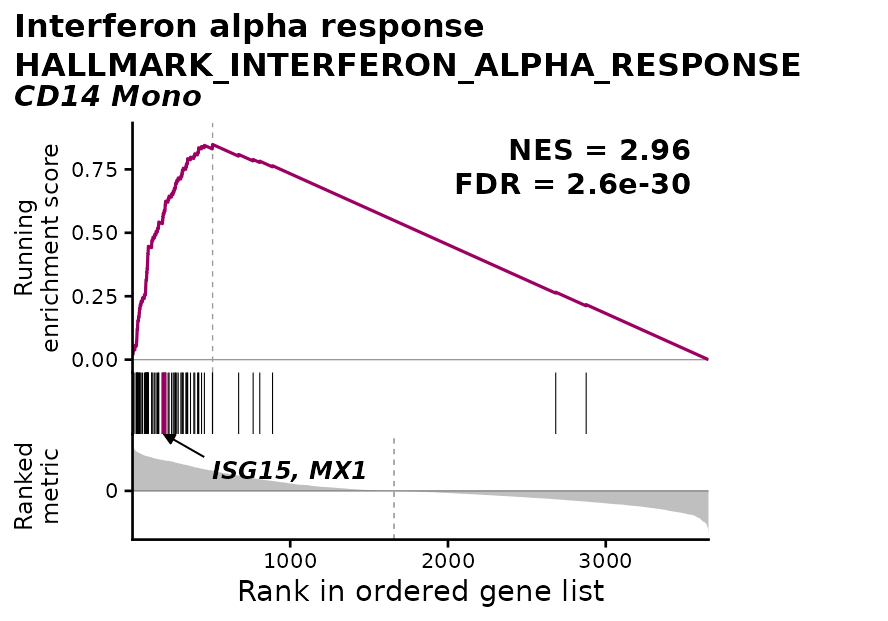
A clusterProfiler GSEA() result holds the ranked list
and the gene sets, so it is plotted directly; a gene set can also be
named by its cleaned name:
cp <- clusterProfiler::GSEA(
ranks[["B"]],
TERM2GENE = term2gene,
pvalueCutoff = 1,
eps = 0,
seed = TRUE,
verbose = FALSE
)
plot_gsea_rank(
cp,
"Interferon gamma response",
comparison = "B",
metric.title = "Signed\n-log10 p"
)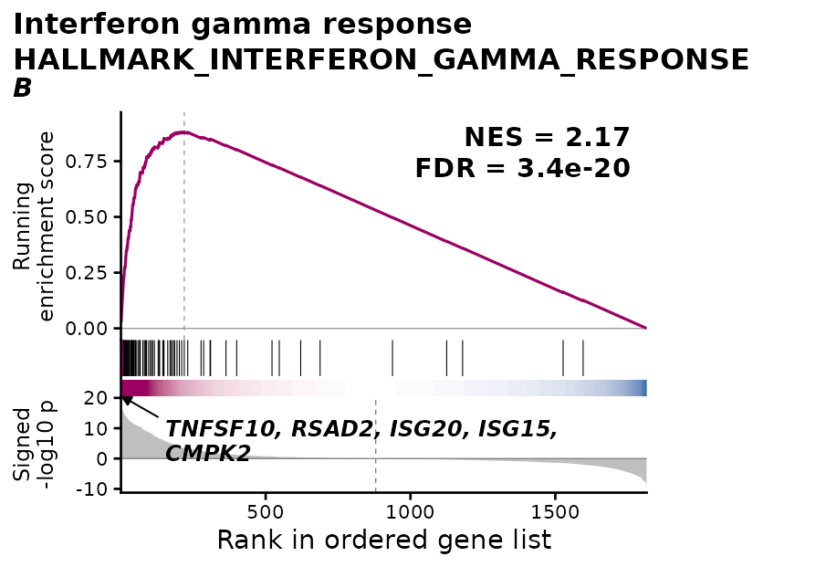